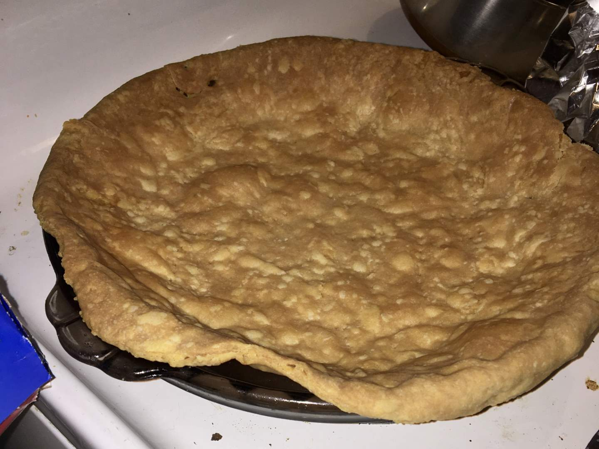
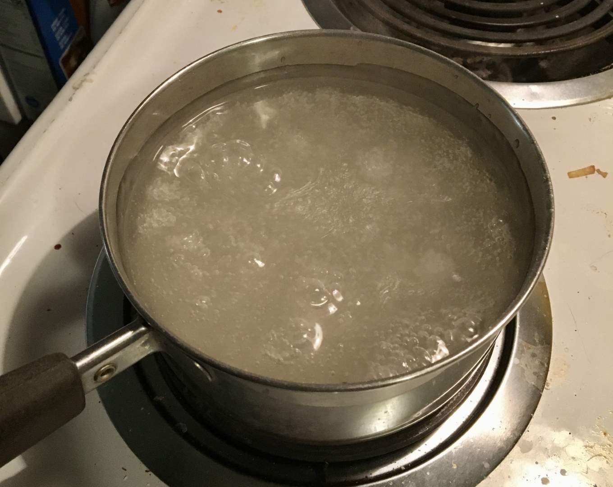
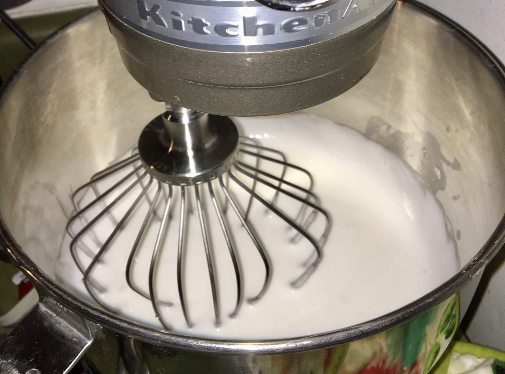
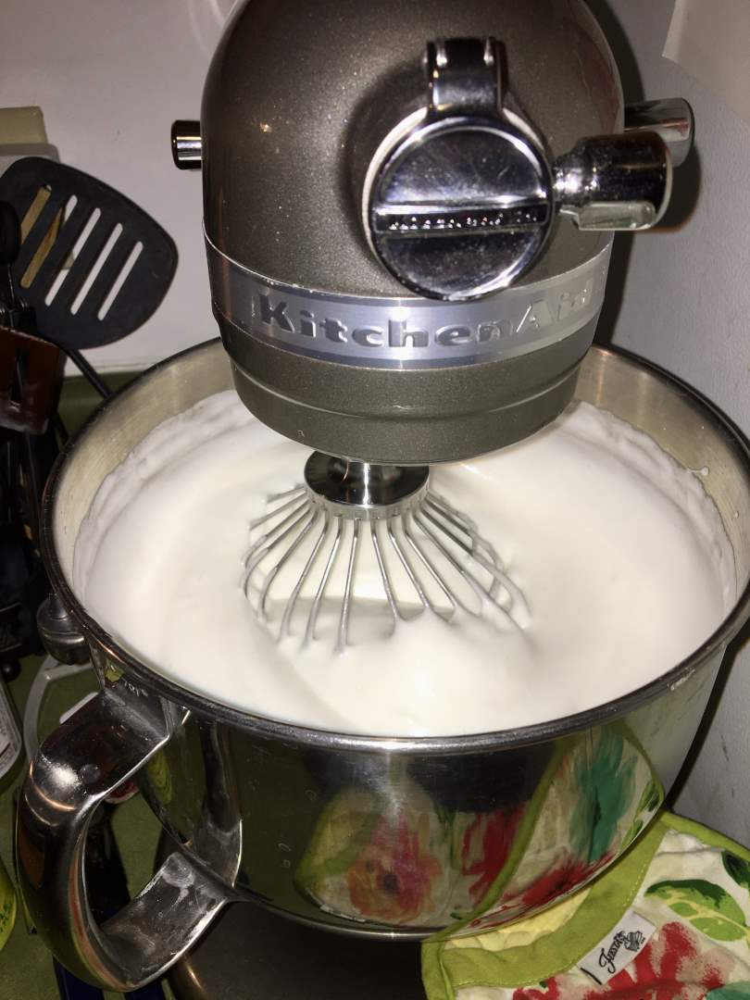
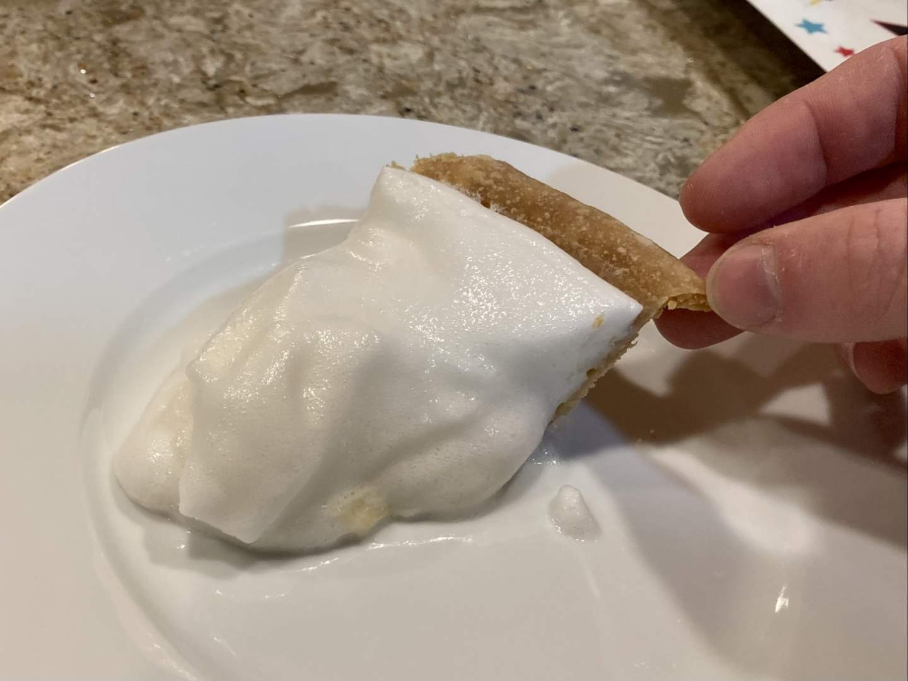

Pie 45: Angel Cream
2024-05-04Recipe from p. 72 of Me, Myself, and Pie
Taste:
Difficulty:
Vibes:
Suggested pairing: a late-night drive
One week, left to my own devices, I attempted an interesting pie from the ol’ reliable Amish pie cookbook. It’s a fluffy pineapple-flavored pie commonly found in Anabaptist cookbooks. Ben was driving home with his family after his brother’s college graduation, so I was entirely unsupervised. If I had been baking a normal fruit or custard pie, this factor would not have been important, but this pie was quite unlike anything we had made before. Furthermore, it required a blind-baked pie crust, which I had never done. My inexperience with blind-baked crusts led to a “levitating” (puffy) crust. I had not left the pie weights in the crust long enough, so as the crust cooked it gradually lifted from the bottom and sides of the dish. In an attempt to remedy this mistake, I moved the crust to a shallower dish so that it would have more support.
The first step to creating the filling was to create a viscous base to help bind the egg whites together. This was easily prepared on the stovetop by boiling sugar, cornstarch, and salt in water. After a few minutes, I removed the mixture from the stove and placed it in the freezer to accelerate the cooling process. An hour later it was ready to be incorporated into the egg whites I had whipped in our stand mixer. I added the sugar mixture, beat it together for ten minutes, then added vanilla and crushed pineapple before beating for another ten minutes. At this point, the total volume of the pie filling had expanded massively and nearly exceeded the capacity of our 7 quart stand mixer bowl. I have no idea if this was supposed to happen and what I could have done to avoid this outcome, but I don’t think it was meant to occur because I had lots of filling left after piling as much as I could in the crust.
 I finished this pie around 10:30 PM on a Saturday night, giving it plenty of time to stiffen in the fridge until the next evening when Ben and his family returned. I waited until then to slice into it. I cautiously transported the pie to his parents’ house to pick him up and share a slice with his mom. The filling was like air and began to spread as soon as the first slice was removed. The taste was silky and tart. It was a unique pie in all aspects, including no one wanting a second slice.
This was one of a handful of pies we didn’t finish eating. By day two in the refrigerator, the crust had become incredibly soggy as it absorbed the juices of the filling. It was sad to have a pie turn out like this, but also gratifying to know that we tried it and can firmly declare our opinion on such pies in the future: “best avoided.” (Feel free to quote).